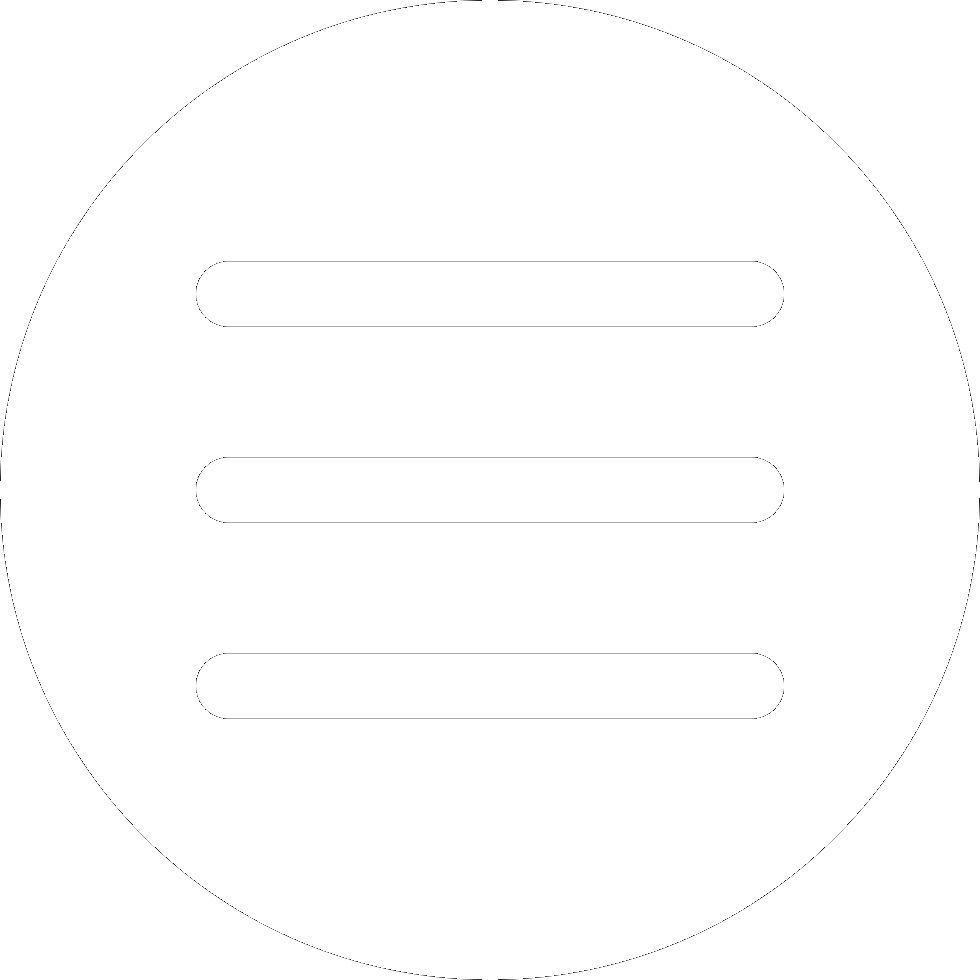

<div *ngIf="mobileSidenavIsOpened == false else elseBlock">
	<div class="header" (window:resize)=onResize($event)>
		
		<div *ngIf="windowWidth <= 800 else elseBlock" class="header__mobileBar">
			<button class="header__mobileBar__button" (click)="openMobileSidenav()">
				
			</button>
		</div>
		<ng-template #elseBlock>
			<nav class="header__bar">
				<div class="header__bar__socialBar">
					<button type="button" (click)="redirectTo('lfp')" class="header__bar__socialBar__button">
						LFP
					</button>
					<button type="button" (click)="redirectTo('fff')" class="header__bar__socialBar__button">
						FFF
					</button>
					<button type="button" class="header__bar__socialBar__button" (click)="redirectTo('linkedin')">
						LINKEDIN
					</button>
					<button type="button" class="header__bar__socialBar__button" (click)="redirectTo('github')">
						GITHUB
					</button>
				</div>
				<div class="header__bar__toolbar">
					<button class="header__bar__toolbar__button" (click)="redirectTo('accueil')">
						ACCUEIL
					</button>
					<button class="header__bar__toolbar__button" (click)="redirectTo('classement')">
						CLASSEMENT
					</button>
					<button class="header__bar__toolbar__button">
						CALENDRIER / RÉSULTATS
					</button>
				</div>
			</nav>
		</ng-template>
	</div>
	<div class="background">
		<router-outlet></router-outlet>
	</div>
</div>
<ng-template #elseBlock>
	<div class="mobileSidenav">
		<button class="mobileSidenav__closedButton" (click)="closeMobileSidenav()">
			X
		</button>
		<nav class="mobileSidenav__toolbar">
			<button class="mobileSidenav__toolbar__button" (click)="redirectTo('accueil')">
				ACCUEIL
			</button>
			<button class="mobileSidenav__toolbar__button" (click)="redirectTo('classement')">
				CLASSEMENT
			</button>
			<button class="mobileSidenav__toolbar__button">
				CALENDRIER / RÉSULTATS
			</button>
		</nav>
		<nav class="mobileSidenav__socialBar">
			<button type="button" (click)="redirectTo('lfp')" class="mobileSidenav__socialBar__button">
				LFP
			</button>
			<button type="button" (click)="redirectTo('fff')" class="mobileSidenav__socialBar__button">
				FFF
			</button>
			<button type="button" class="mobileSidenav__socialBar__button" (click)="redirectTo('linkedin')">
				LINKEDIN
			</button>
			<button type="button" class="mobileSidenav__socialBar__button" (click)="redirectTo('github')">
				GITHUB
			</button>
		</nav>
	</div>
</ng-template>